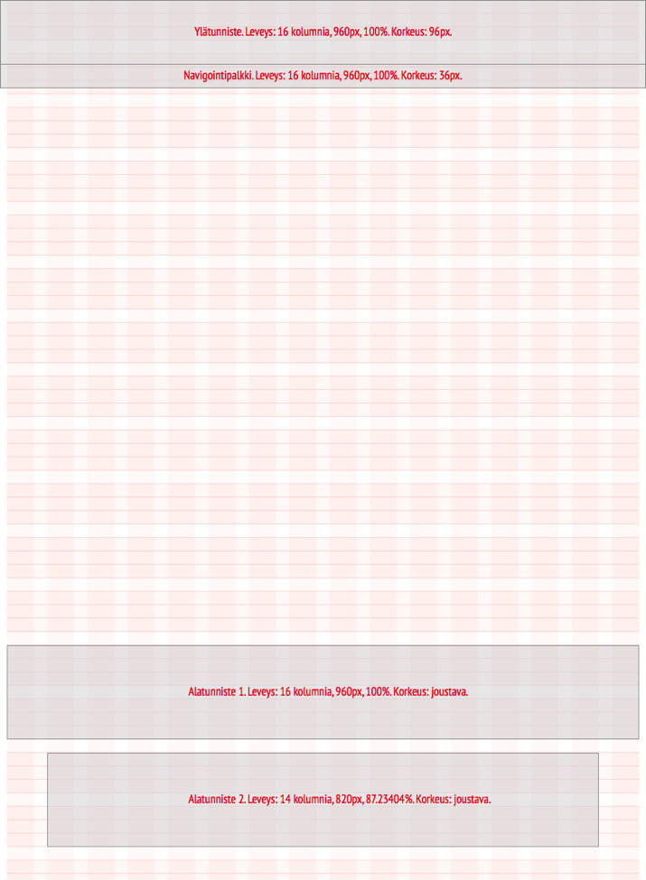
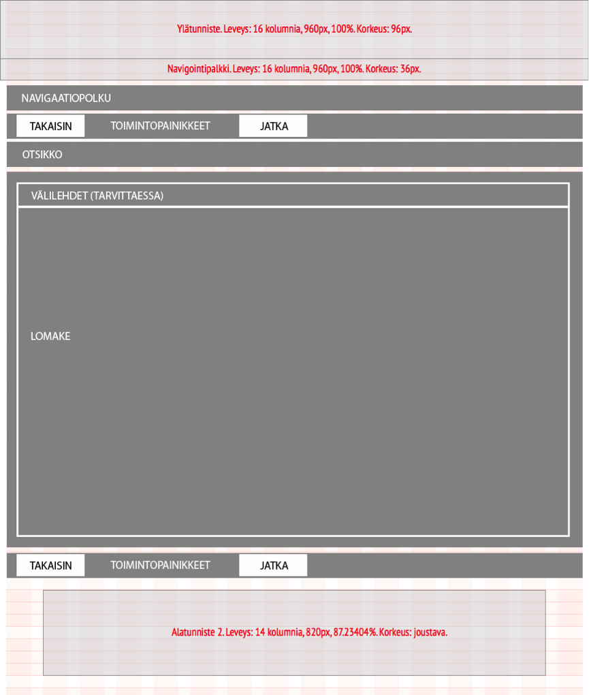

Käyttöliittymän sivujen asemoinnissa noudatetaan 16 kolumnin grid-mallia. Sivujen vaakasuuntainen asemointi on optimoitu 960 px näyttöleveydelle. Vasemmalle ennen ensimmäistä kolumnia jätetään 10px marginaali, ja oikealle viimeisen kolumnin jälkeen samoin. Yhden kolumnin leveys on 40px ja kolumnien väliin jätetään 20px marginaali. Skaalaaminen muihin sivuleveyksiin toimii suhteellisten mittojen kautta: Yhden kolumnin leveys on 4.25% ja kolumnien välinen marginaali 2.0% sivuleveydestä.
Virkailijapalvelussa minimileveydeksi määritetty 1170px. Kun näyttöleveys on kasvaa yli 1170px, näkymä skaalautuu edellä kuvatun mukaisesti. Kun näyttöleveys ylittää 1244px, sisältö keskitetään ilman, että sisällön leveyttä enää kasvatetaan.
Oppijan palvelu on suunniteltu responsiiviseksi. Toistaiseksi virkailijapalvelun responsiivisesta suunnittelusta ei ole päätöksiä.
Kaikki käyttöliittymän sivut noudattavat yleistä sivupohjaa. Se sisältää ylhäältä alaspäin lueteltuna seuraavat elementit:
Alatunniste 1 on käytössä ainoastaan Oppijan palvelussa.
Poikkeuksen yleiseen sivupohjaan tekee virkailijapalvelun aloitussivu, jossa navigointipalkkia ei näytetä, koska virkailijapalvelun navigaatio on käytettävissä vasta sisäänkirjautumisen jälkeen.
Sisältöalueella käytetään erilaisia sivupohjia näkymän käyttötarkoituksen mukaan. Katso: Sivupohjat. Näkymä voidaan sisältöalueen osalta tarvittaessa rakentaa myös vapaasti käyttäen grid-mallia vaikka suositeltavaa onkin käyttää määritettyjä sivupohjia.
Yleisen sivupohjan asemointimääritykset ovat seuraavat:
| Elementin nimi | Leveys kolumneissa | Leveys pikseleissä | Leveys prosenteissa sivun koko leveydestä | Korkeus pikseleissä |
|---|---|---|---|---|
| Ylätunniste | 16 | 960 px | 100% | 96 px |
| Navigointipalkki | 16 | 960 px | 100% | 36 px |
| Alatunniste 1 | 16 | 960 px | 100% | joustava |
| Alatunniste 2 | 14 | 820 px | 87,23% | joustava |
Yleinen sivupohja:

Virkailijapalvelujen ylätunniste sisältää:
Virkailijapalvelun sisäänkirjautumissivulla ylätunniste sisältää poikkeuksellisesti:
Oppijan palvelun ylätunniste sisältää:
Navigointipalkki sisältää päävalikon.
Katso päävalikon määritys (Navigointi - Päävalikko)
Katso päävalikon visuaalinen määritys (Visuaalinen tyyli - Päävalikko)
Alatunniste 1 on käytössä ainoastaan Oppijan palvelussa. Sen tarkoituksena on koota palvelun hallintoon ja asiakaspalveluun liittyvät tiedot ja linkit yhteen.
Alatunniste 1 sisältää:
Alatunniste 2:n tarkoituksena on palvelun omistajuuden osoittaminen. Se sisältää Opetushallituksen logon, Opetus- ja kulttuuriministeriön logon sekä tekijänoikeuslausekkeen: “Copyright © 2013 Opetushallitus”. Logot toimivat linkkeinä ko. organisaatioiden www-sivustojen etusivuille. Virkailijapalvelussa esitetään logojen yhteydessä myös ko. organisaatioiden yhteystiedot.
Seuraavien virkailijapalvelun sivupohjien noudattaminen on yhdenmukaisuuden vuoksi suositeltavaa. Muissa tapauksissa noudatetaan pääsääntöisesti yleistä sivupohjaa, näiden sivupohjien mallia, yhdenmukaisia tiedon esitystapoja sekä tässä tyylioppaassa esiteltyjä toiminnallisia komponentteja.
Hakutulosnäkymää käytetään virkailijapalvelussa kun käyttäjän tulee hakea tietoa ja/tai valita tietoa tarkasteltavaksi tai muokattavaksi. Näkymään sijoitetaan aina myös Luo uusi -painike toimintopainikkeille varattuun tilaan.
Hakuehtoja voidaan sijoittaa näkymään vapaasti toiminnallisia komponentteja hyödyntäen. Vähintään hakuehtona käytetään vapaata tekstikenttää (hakukenttä) ja Hae-painiketta, sekä Tyhjenna-painiketta. Hakuehdoilla tulee aina olla otsikot.
Hakutulos esitetään taulukossa jonka sarakkeille annetaan sarakeotsikot. Tietojen järjestäminen sarakeotsikoittain on mahdollista. Jos hakutuloksille on tarpeen tarjota toiminnallisuutta, käytetään hakutuloksen edessä valikkokuvaketta, josta avautuu toimintovalikko.
Hakutuloslistassa voidaan käyttää valintaruutuja joilla voidaan mahdollistaa toimintoja usealle hakutulokselle yhtäaikaisesti (massatoiminto). Massatoimintopainikkeet sijoitetaan hakutuloksen yläpuolelle toimintopainikkeille varattuun tilaan. Massatoimintopainikkeet eivät ole käytössä ennenkuin käyttäjä on valinnut hakutuloksesta vähintään yhden hakutuloksen.
Hakutulokset järjestetään välilehdille tarpeen mukaan asiakokonaisuuksittain. Välilehtien otsakkeen perässä kerrotaan välilehden sisältämien hakutulosten lukumäärä (kokonaislukumäärä). Hakutulokset sivutetaan tarvittaessa. Sivutus-kontrolli tarjotaan sekä hakutulosten ylä- että alapuolella. Hakutulosten määrää per sivu sekä tuloslistan järjestystä voidaan vaihtaa.
Lomakenäkymää käytetään kun järjestelmään lisätään tietoa tai järjestelmään tallennettua tietoa muokataan.
Toimintopainikkeiden vasemmalle puolen sijoitetaan takaisin-painike, joka vie takaisin hakutulosnäkymään. Se toimii peruuta-painikkeena, kunnes tiedot on tallennettu ensimmäisen kerran. Toimintopainikkeiden oikealle puolen sijoitetaan jatka-painike, joka vie tarkastelunäkymään.
Tallenna-painike toimintopainikkeissa tallentaa kaiken lomakkeen sisällön. Monisivuisessa lomakkeessa tiedot tulee tallentaa ennen siirtymistä seuraavalle välilehdelle. Jos tallennusta ei ole tehty, käyttäjä ohjataan tallentamaan.
Otsikkona ja navigaatiopolussa näytetään lomakkeella luodun tiedon tallennettu nimi. Ennen ensimmäistä tallennusta otsikkona käytetään Uusi tieto, jossa tieto on valittu tietotyyppi jota ollaan lisäämässä.
Sisältöalueelle sijoitetaan lomakkeen kentät. Kenttäotsikot (nimiöt) tasataan oikealle, kentät vasemmalle. Jos kenttiä on enemmän kuin 10, on suositeltavaa jakaa kentät loogisiksi kokonaisuuksiksi välilehdille tai ohjatuksi sivustoksi. Ensimmäiselle välilehdelle sijoitetaan tyypillisesti Perustiedot, jotka ovat pakollisia. Kaikki pakolliset kentät tulee sijoittaa ensimmäiselle välilehdelle.
Toimintopainikkeiden vasemmalle puolen sijoitetaan takaisin-painike, joka vie takaisin hakutulokseen.
Otsikkona ja navigaatiopolussa käytetään tiedon tallennettua nimeä. Tyypillisesti se on sama nimi, joka näytetään hakijalle Oppijan palvelussa.
Mikäli näytettävästä tiedosta on useita kieliversioita, jaetaan kieliversiot välilehdille. Sisältöalueen tiedot jaetaan loogisiin kokonaisuuksiin ja otsikoidaan sisällön mukaisesti. Tyypillisesti sisältöalueella käytetään taitettua listaa/paneelia, joista ensimmäinen on oletuksena avoinna ja muut suljettuja.